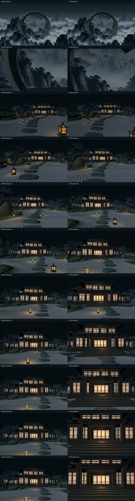
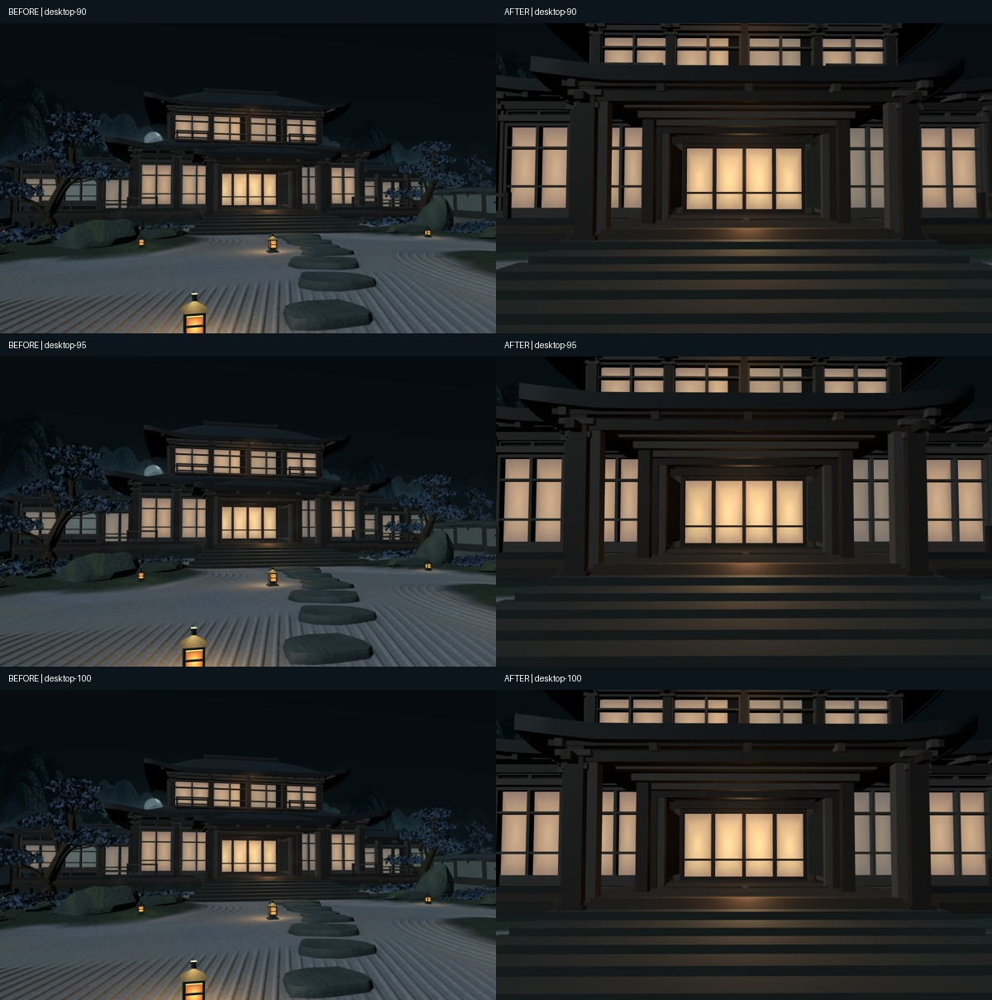

Phase 3K.6.9 — Cinematic Stone-Path Camera Refit
Mismo jardín. Izquierda: cámara anterior. Derecha: recorrido por las piedras. Puerta cerrada.
Movimiento · 0 → 100%
Captura local a 960 × 600; composición wide/tablet idéntica en ambas versiones. El tiempo uniforme de scroll permite comparar el pacing. El primer 16% corresponde al handoff de Moon Gate.
Trayectoria física y atención
Desktop · checkpoints

Llegada · 90 / 95 / 100%

Responsive
Sin cambios de arte, iluminación, FOV, near/far ni puerta. Sin push.